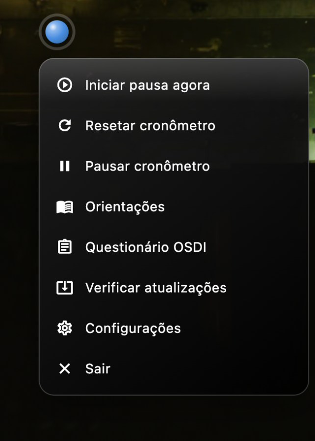
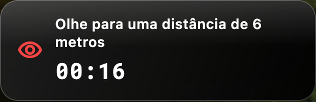
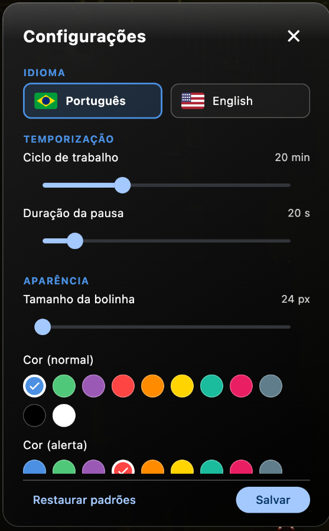
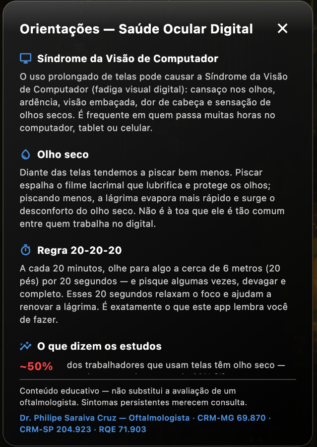
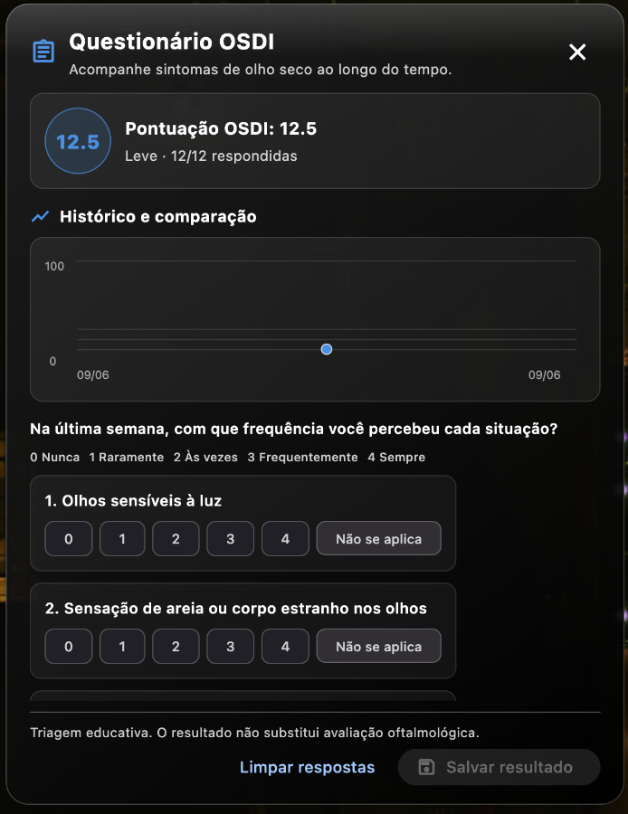

Um lembrete gentil e flutuante que aplica a regra oftalmológica 20-20-20 — desenvolvido por um médico oftalmologista para prevenir a fadiga visual digital e o olho seco.
Durante o trabalho concentrado em telas, a frequência do piscar despenca e o filme lacrimal evapora — resultando em ardência, visão turva e cansaço ao fim do dia. O Dry Eye Widget nasceu no consultório: uma resposta prática à queixa mais comum da era digital, transformada em software livre para qualquer pessoa usar.
Recomendada pelas sociedades internacionais de oftalmologia como primeira linha de prevenção da fadiga visual digital.
O widget acompanha o ciclo em silêncio e sinaliza com suavidade quando chega a hora da micro-pausa.
Focar longe relaxa o músculo ciliar e desfaz o esforço de convergência acumulado na visão de perto.
Tempo suficiente para restabelecer o piscar completo e redistribuir o filme lacrimal sobre a córnea.
Números de meta-análises e estudos clínicos revisados por pares.
dos usuários de telas apresentam Doença do Olho Seco, segundo meta-análise de prevalência global.
de queda de produtividade (presenteísmo) documentada em indivíduos com olho seco sintomático.
de perda na velocidade e fluência de leitura prolongada induzida por alterações da superfície ocular.
Referências completas com DOI ao final da página. Arquivo de metadados RIS disponível no repositório.
Uma bolinha discreta em overlay transparente mostra o progresso do ciclo sem bloquear seu trabalho.
Intervalo, tamanho, cores e opacidade ajustáveis. O padrão clínico é 20 minutos — mas você decide.
Cronômetro regressivo de 20 segundos conduz a pausa e rearma o ciclo automaticamente.
Para quem está em tratamento: lembretes opcionais de lubrificação ocular nos horários certos.
Funciona 100% offline. Nenhum dado de atividade é coletado, vendido ou enviado para fora da sua máquina.
Construído em Flutter desktop com efeito liquid glass nativo. Inicia com o sistema, vive na bandeja.
Telas do widget no macOS e Windows — interface em vidro translúcido que acompanha, avisa e some.






Concebido, desenvolvido e documentado clinicamente em resposta à crescente incidência de fadiga visual digital na prática clínica diária. O objetivo: transpor as recomendações preventivas baseadas em evidências do ambiente clínico para uma ferramenta digital gratuita, integrada ao fluxo de trabalho de quem vive em frente a telas.
Courtin R, et al. Prevalence of dry eye disease in visual display terminal workers: a systematic review and meta-analysis. BMJ Open. 2016;6(1):e009675.
DOINichols KK, et al. Impact of Dry Eye Disease on Work Productivity, and Patients' Satisfaction With Over-the-Counter Dry Eye Treatments. Invest Ophthalmol Vis Sci. 2016;57(7):2975-82.
DOIMathews PM, et al. Functional impairment of reading in patients with dry eye. Br J Ophthalmol. 2016;101(4):481-6.
DOIKarakus S, et al. Impact of Dry Eye on Prolonged Reading. Optom Vis Sci. 2018;95(12):1105-13.
DOIO Dry Eye Widget é uma ferramenta de apoio preventivo — não substitui avaliação médica. Em caso de desconforto ocular persistente, visão turva ou olhos secos crônicos, procure um oftalmologista.